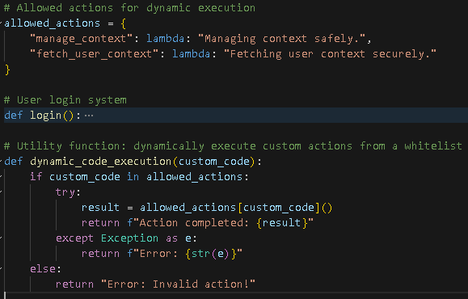
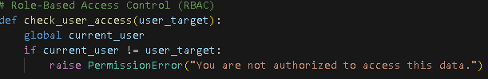

What is Insecure Plugin Design?
Insecure plugin design occurs when third-party plugins or custom code used by a chatbot are not securely implemented, potentially allowing attackers to execute harmful commands.
Examples of Insecure Plugin Design
- Unrestricted Code Execution: Plugins that use
exec()or similar functions without restrictions. - Lack of Input Validation: Plugins that fail to sanitize user input before processing.
Solutions to Prevent Insecure Plugin Design
-
Secure Command Execution Alternatives & Whitelisting for Plugin Security:
Avoid using
exec()or similar functions for executing code. Instead, utilize safer alternatives like parsing input and handling commands with well-defined logic trees.This example shows how to handle input with controlled logic, reducing security risks.
-
Enhanced Role-Based Access Control (RBAC):
Expand RBAC policies to provide more granular permissions for users, limiting access to plugin functionalities based on roles.
Illustration of fine-grained access controls ensuring only authorized users can trigger sensitive operations.
-
Code Review and Auditing:
Implement mandatory external reviews of plugin code to catch potential security flaws before deployment.
External code audits add an additional layer of protection against vulnerabilities.
-
Monitoring and Logging Mechanisms:
Integrate comprehensive logging for all plugin actions and monitor these logs to detect suspicious activities early.
Monitoring systems with alerts ensure real-time tracking of potential security issues.
-
Regular Security Audits:
Conduct periodic audits of all plugins to identify and address newly discovered vulnerabilities.
Routine security checks can mitigate the risk of overlooked vulnerabilities.
-
Plugin Isolation with Virtual Machines/Containers:
Run plugins in isolated environments like virtual machines or containers to prevent them from affecting the main system.
Using isolation techniques ensures that plugin issues are contained within a controlled space.
For full code implementation, view the code below: